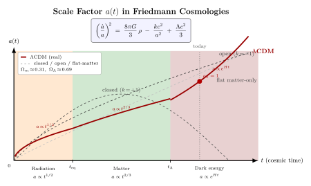

膨胀宇宙的方程是什么样的?
上一节我们写下了 FLRW 度规, 但只把它当作一个几何对象. 它有一个对称要求 — 空间均匀且各向同性 — 但$a(t)$ 怎么随时间变, 度规自己说不出来. 要回答"宇宙是膨胀的吗? 多快? 加速还是减速?"这一类具体问题, 我们必须把 FLRW 度规扔进 Einstein 场方程, 让左边的几何与右边的物质能量打一架, 看 $a(t)$ 满足什么常微分方程.
这一架打出来的东西就是 Friedmann 方程. 它是 GR 与宇宙学交接处的核心: 给定宇宙里有什么 (物质 / 辐射 / 暗能量, 以及空间曲率 $k$), Friedmann 方程告诉你 $a(t)$ 的演化, 反过来观测 $a(t)$ 的演化 (通过红移、超新星亮度、CMB) 又把宇宙的成分清单钉死. 这一套自洽闭环, 是 21 世纪宇宙学能拿出 $\Omega_m\approx 0.31$, $\Omega_\Lambda\approx 0.69$ 这种百分位精度数字的原因.
一、把 FLRW 代进 Einstein 场方程
FLRW 度规, 用同动 (comoving) 球坐标:
$$ \mathrm{d}s^2 \;=\; -c^2\mathrm{d}t^2 + a(t)^2\!\left[\frac{\mathrm{d}r^2}{1-kr^2} + r^2\!\left(\mathrm{d}\theta^2 + \sin^2\!\theta\,\mathrm{d}\phi^2\right)\right]. $$
这里 $a(t)$ 是无量纲的尺度因子 (约定 $a(t_0)=1$ 对应当下), $k\in\{-1,0,+1\}$ 标记空间曲率类型 (开/平/闭). 度规分量 $g_{tt}=-c^2$, $g_{rr}=a^2/(1-kr^2)$, $g_{\theta\theta}=a^2 r^2$, $g_{\phi\phi}=a^2 r^2 \sin^2\theta$.
下一步是算曲率. 这是个标准但繁琐的练习: 算 Christoffel 符号 $\Gamma^\mu_{\nu\rho}$, 算 Riemann 张量 $R^\mu{}_{\nu\rho\sigma}$, 缩并出 Ricci 张量 $R_{\mu\nu}$ 与 Ricci 标量 $R$. 我们直接报结果 (任何标准 GR 教材都会算一遍, 例如 Weinberg 1972 §15.1):
$$ R_{tt} = -\frac{3\ddot a}{a},\qquad R_{ii} = \frac{a\ddot a + 2\dot a^2 + 2kc^2}{c^2}\,\tilde g_{ii},\qquad R = \frac{6}{c^2}\!\left(\frac{\ddot a}{a} + \frac{\dot a^2}{a^2} + \frac{kc^2}{a^2}\right), $$
这里 $\tilde g_{ii}$ 是空间三度规分量. 右边能-动张量取最常用的完美流体形式 — 在共动观察者的局部静止系里, 流体只有能量密度 $\rho c^2$ 和各向同性压强 $p$, 没有热流也没有黏性
$$ T_{\mu\nu} \;=\; \big(\rho + p/c^2\big)\,u_\mu u_\nu + p\,g_{\mu\nu}, $$
共动流体 $u^\mu=(1,0,0,0)$, $u_\mu=(-c^2,0,0,0)/c=(-c,0,0,0)$ — 在一个坐标约定下 $T_{tt}=\rho c^2$, $T_{ii}=p\,\tilde g_{ii}$ (空间分量).
二、第一与第二 Friedmann 方程
把上面这些塞进 Einstein 场方程 $G_{\mu\nu}+\Lambda g_{\mu\nu}=(8\pi G/c^4)T_{\mu\nu}$, 即 $R_{\mu\nu}-\tfrac{1}{2}g_{\mu\nu}R+\Lambda g_{\mu\nu} = (8\pi G/c^4)T_{\mu\nu}$. 取 $tt$ 分量, 化简后得到
$$ \left(\frac{\dot a}{a}\right)^{\!2} \;=\; \frac{8\pi G}{3}\,\rho \;-\; \frac{kc^2}{a^2} \;+\; \frac{\Lambda c^2}{3}. \tag{1} $$
这就是第一 Friedmann 方程. 左边是哈勃参数 $H\equiv\dot a/a$ 的平方 — 它衡量当下宇宙的膨胀速率. 右边三项分别对应: 物质 (含辐射等所有 $\rho$), 空间曲率, 宇宙学常数. 第 (1) 式是一阶常微分方程, 给定初始条件 $a(t_*)$ 与三项贡献的当下值, 它把 $a(t)$ 的整段历史钉死.
取空间分量 (任一 $ii$ 分量, 三个等价), 减掉 $tt$ 分量配合 $-\tfrac{1}{2}g_{\mu\nu}R$ 的贡献, 经过一番代数, 给出
$$ \frac{\ddot a}{a} \;=\; -\frac{4\pi G}{3}\!\left(\rho + \frac{3p}{c^2}\right) \;+\; \frac{\Lambda c^2}{3}. \tag{2} $$
这是第二 Friedmann 方程, 也叫"加速方程". 它告诉你尺度因子的二阶导. 注意一件惊心的事: 通常的物质 ($\rho+3p/c^2 \gt 0$) 与正的 $\Lambda$ 在 $\ddot a$ 上贡献相反. 物质让宇宙减速膨胀 (引力把东西往一起拉), $\Lambda$ 让宇宙加速膨胀. 哪一项赢, 取决于当时的密度比.
对完美流体取 $\nabla^\mu T_{\mu\nu}=0$ — 这是 Bianchi 恒等式 $\nabla^\mu G_{\mu\nu}=0$ 的强制结果, 在 FLRW 对称性下化简为 (取 $\nu=t$ 分量):
$$ \dot\rho + 3H\!\left(\rho + p/c^2\right) = 0. \tag{3} $$
这是宇宙学的连续性方程, 描述能量密度怎么随膨胀稀释. 加 (1) 加 (3) 实际上等价于 (1) 加 (2): 三个方程里只有两个独立, 这是因为 Bianchi 恒等式自动把第三个方程编进了前两个.
三、三种成分: 物质、辐射、暗能量

把连续性方程 (3) 用在三种典型流体上, 对应不同的"状态方程" $w\equiv p/(\rho c^2)$:
(a) 物质 (包括冷暗物质与重子, 即非相对论性, $w\approx 0$): $p=0$, (3) 给 $\dot\rho_m = -3H\rho_m$, 即 $\rho_m\propto a^{-3}$. 物理意义直白: 物质粒子数守恒, 体积增大 $a^3$ 倍, 密度下降相同倍数.
(b) 辐射 (光子、中微子, 即极端相对论性, $w=1/3$): $p=\rho c^2/3$, (3) 给 $\rho_r\propto a^{-4}$. 多了一个 $a^{-1}$ 因子, 来自光子波长被拉长 $a$ 倍, 能量减少 $a^{-1}$ — 体积稀释 ($a^{-3}$) 与红移 ($a^{-1}$) 共同贡献.
(c) 暗能量 (宇宙学常数, $w=-1$): $p=-\rho c^2$, (3) 给 $\dot\rho_\Lambda=0$, 即 $\rho_\Lambda$ 恒定. 真空能不被膨胀稀释 — 这就是为什么晚期宇宙 $\Lambda$ 能赢: 物质和辐射在稀释, $\Lambda$ 不动, 早晚要主导.
把这三类塞进 (1) 式右边, 用 $H_0$ 和当今密度参数 $\Omega_i\equiv \rho_{i,0}/\rho_c$ 改写
$$ H^2(z) \;=\; H_0^2\!\left[\Omega_r(1+z)^4 + \Omega_m(1+z)^3 + \Omega_k(1+z)^2 + \Omega_\Lambda\right], $$
其中 $1+z=a_0/a$ 是红移, $\Omega_k=-kc^2/(a_0^2 H_0^2)$ 是曲率"等效"密度参数. 当今 $\Omega_r\approx 9\times 10^{-5}$, $\Omega_m\approx 0.31$, $\Omega_\Lambda\approx 0.69$, $\Omega_k\approx 0$ (Planck 2018 把 $|\Omega_k|\lt 0.005$). 各项随 $z$ 的 power 不同, 故宇宙在不同时代由不同成分主导:
- 极早期 $z\gg z_{\rm eq}$: $\Omega_r(1+z)^4$ 主导, $a\propto t^{1/2}$.
- $z\lt z_{\rm eq}\approx 3400$ (物质-辐射相等): $\Omega_m(1+z)^3$ 主导, $a\propto t^{2/3}$.
- $z\lt z_\Lambda\approx 0.3$ (物质-$\Lambda$ 相等, 约 70 亿年前): $\Omega_\Lambda$ 主导, $a\propto \exp(\sqrt{\Lambda c^2/3}\,t)$.
用 (2) 式可以反求"加速何时开始": $\ddot a=0$ 当 $\rho_m+\rho_r-2\rho_\Lambda=0$ (设 $p_m=p_r$ 为零简化, 仅近似), 数值上对应 $z\approx 0.6$, 约 60 亿年前. 也就是说, 宇宙在 60 亿年前从减速膨胀切到加速膨胀 — 这是 1998 年 Riess、Perlmutter 等用 Type Ia 超新星 Hubble 图直接观测到的, 当年的 Nobel 奖.
四、临界密度与一些数字
由 (1) 式: 当 $k=0$ 且 $\Lambda=0$ 时, $H^2=8\pi G\rho/3$, 反解给出"使宇宙正好平坦"所需的密度
$$ \rho_c \;\equiv\; \frac{3H_0^2}{8\pi G}. $$
用 $H_0\approx 67.4$ km/s/Mpc $\approx 2.18\times 10^{-18}$ s$^{-1}$ 代入
$$ \rho_c \;\approx\; \frac{3\times(2.18\times 10^{-18})^2}{8\pi\times 6.674\times 10^{-11}} \;\approx\; 8.5\times 10^{-27}\,\mathrm{kg/m^3}. $$
大约 $9\times 10^{-27}$ kg/m³. 这是一个极稀薄的密度: 平均到每立方米只有约 5 个氢原子的质量, 相当于实验室能造出的最好真空之一千万分之一. 整个可观测宇宙的物质平均密度就在这个量级, 而绝大部分还不是普通原子: $\Omega_m\approx 0.31$ 里只有 $\Omega_b\approx 0.05$ 是重子物质, 其余 $\Omega_{\rm cdm}\approx 0.26$ 是冷暗物质.
密度参数 $\Omega_i$ 的物理意义就是"占临界密度的份额". 当今总能量密度参数 $\Omega_{\rm tot}=\Omega_m+\Omega_\Lambda+\Omega_r\approx 1.000$, 与 $\Omega_k\approx 0$ 自洽 — 也就是说, 我们的宇宙在百分位精度上是空间平坦的. 这是 inflation 早期暴胀的预言之一, 被 CMB 观测漂亮地证实.
顺手算一下另外几个标志数字:
$$ z_{\rm eq} \;=\; \frac{\Omega_m}{\Omega_r} - 1 \;\approx\; \frac{0.31}{9\times 10^{-5}} - 1 \;\approx\; 3400. $$
这个红移对应宇宙年龄约 $5\times 10^4$ 年, 是辐射主导让位给物质主导的转折点; 它也设定了 CMB 各向异性中"声学峰"的尺度. 再算 $\Lambda$ 主导时的 e-folding 时间 $1/\sqrt{\Lambda c^2/3}\approx 1/\sqrt{H_0^2 \Omega_\Lambda}\approx 1.7\times 10^{10}$ 年, 跟当下宇宙年龄 $\approx 1.38\times 10^{10}$ 年同量级 — 巧合吗? 这就是著名的"cosmic coincidence problem": 我们恰好生活在 $\rho_m\sim\rho_\Lambda$ 的过渡期, 不早不晚, 怎么解释?
五、Friedmann、Lemaître 与 Einstein
1922 年, Aleksandr Friedmann — 一个圣彼得堡的气象学家兼数学家, 当时 34 岁 — 在 Zeitschrift für Physik 上发了一篇《空间曲率的论文》(Über die Krümmung des Raumes), 第一次写下了我们现在叫做 Friedmann 方程的东西. 他没有观测数据, 纯粹从 Einstein 场方程的对称解出发, 推出 $a(t)$ 必须随时间变化, 并讨论了 $k=+1$ (闭, 必塌缩)、$k=0$ (平)、$k=-1$ (开) 三种可能.
Einstein 立刻在 Z. Phys. 上发评论, 说 Friedmann 算错了 — 静态宇宙才对. Friedmann 写信寄到柏林, 反复说服, Einstein 半年后才承认是自己签错符号, 公开撤回评论. 但他从内心上没有接受: 他还认为宇宙应该是静态的, 这也是他 1917 年加入 $\Lambda$ 项的初衷.
1925 年 Friedmann 因伤寒去世, 38 岁. 1927 年, 比利时神父兼天文学家 Georges Lemaître 在《布鲁塞尔科学学会年报》上独立重发现了 Friedmann 方程, 并迈出 Friedmann 没迈的一步: 他把方程接到当时已经积累的星系红移观测上, 给出了第一个版本的 Hubble 定律 $v = H_0 d$, 数值估计 $H_0\approx 625$ km/s/Mpc (今天的值小一个量级, 但概念已建立).
1927 年 Solvay 会议, Lemaître 走过去找 Einstein, 解释他的工作. Einstein 据说回了一句很尖锐的话: "Vos calculs sont corrects, mais votre physique est abominable" (你的计算正确, 但你的物理糟糕). Einstein 还是不接受膨胀宇宙. 到 1929 年 Hubble 系统发表星系红移-距离关系, 1931 年 Einstein 终于公开承认 — 据说他自责说加入 $\Lambda$ 是"他一生最大的错误". 历史的讽刺: 1998 年 $\Lambda$ 又回来了, Einstein 的"错误"变成了对的, 只是物理意义换成了暗能量.
Lemaître 1931 年又往前走一步, 提出"原始原子" (l'atome primitif) — 即"宇宙起源于一个极小、极致密的初始状态"的图像, 这就是后来 Hoyle 在广播里轻蔑地叫做"big bang" 的那个理论. 名字反讽地留了下来. 一条从 Friedmann 1922 起步、Lemaître 1927-1931 完成、被 Hubble 1929 观测确认、被 1998 年超新星观测重塑、被 Planck 2018 钉到百分位精度的链条 — 这一条链, 是 Friedmann 方程在 100 年里的活历史.
小结
这一节我们把 FLRW 度规扔进 Einstein 场方程, 右边塞进完美流体 $T_{\mu\nu}=(\rho+p/c^2)u_\mu u_\nu+p g_{\mu\nu}$, $tt$ 分量给出第一 Friedmann 方程 (1) $(\dot a/a)^2=(8\pi G/3)\rho-kc^2/a^2+\Lambda c^2/3$, 空间分量给出第二 Friedmann 方程 (2) $\ddot a/a=-(4\pi G/3)(\rho+3p/c^2)+\Lambda c^2/3$, 加上 Bianchi 恒等式自带的连续性方程 (3) $\dot\rho+3H(\rho+p/c^2)=0$. 三种成分按状态方程稀释: 物质 $\rho_m\propto a^{-3}$, 辐射 $\rho_r\propto a^{-4}$, $\Lambda$ 不变, 自然解释了宇宙演化的三段式 — 辐射主导 ($a\propto t^{1/2}$) → 物质主导 ($a\propto t^{2/3}$) → 暗能量主导 ($a\propto e^{Ht}$). 当今观测把成分清单钉到 $\Omega_m\approx 0.31$, $\Omega_\Lambda\approx 0.69$, 临界密度 $\rho_c\approx 9\times 10^{-27}$ kg/m³ (约 5 H atoms/m³), 物质-辐射相等的红移 $z_{\rm eq}\approx 3400$. 这条方程从 Friedmann 1922 在 Z. Phys. 上独立写下, 经过 Lemaître 1927 的重发现、Einstein 1931 的迟来承认、Hubble 1929 的观测确认, 到 Planck 2018 的精度宇宙学, 已经是百年的老兵. 下一节我们就把 $\Omega_\Lambda\approx 0.69$ 这个数字背后的暗能量本身拆开来看 — 它到底是真空能, 是动力学场, 还是更深层的几何修正?
▲